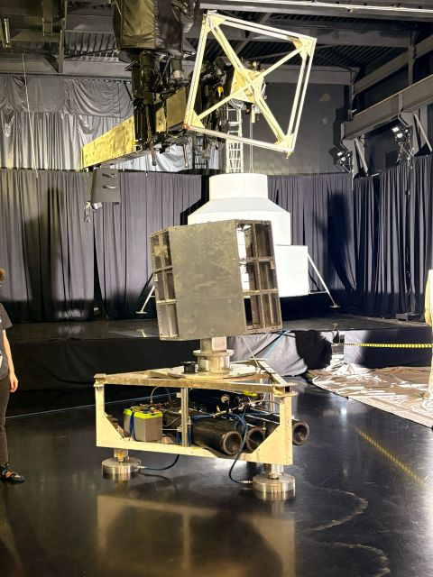

NASA MARSHALL · OSTEM 2026
Robotics for lunar-dust testing.
I evaluated a legacy robotic arm for use in a constrained high-vacuum chamber, linking workspace geometry, actuator limits, system requirements, and verification planning.
34system requirements
6test scenarios
10⁻⁷torr vacuum target